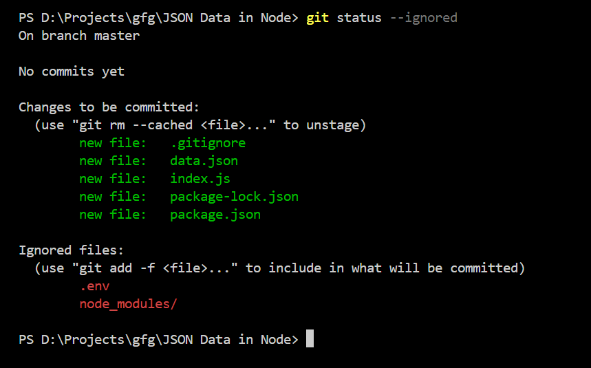

El archivo .gitignore se utiliza para especificar qué archivos o directorios deben ser ignorados por Git. Esto es útil para evitar que archivos temporales, de configuración o de compilación sean incluidos en el repositorio.
Ejemplo de un archivo .gitignore:
# Ignorar archivos de log
*.log
# Ignorar directorios de compilación
build/
# Ignorar archivos de configuración
config.jsonPara crear un archivo .gitignore, simplemente crea un archivo de texto con ese nombre en la raíz de tu repositorio y agrega las reglas que desees.